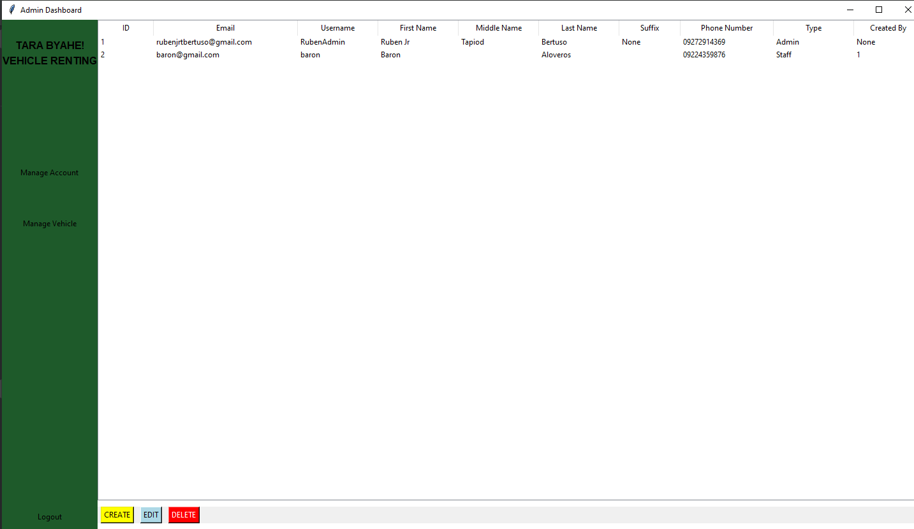
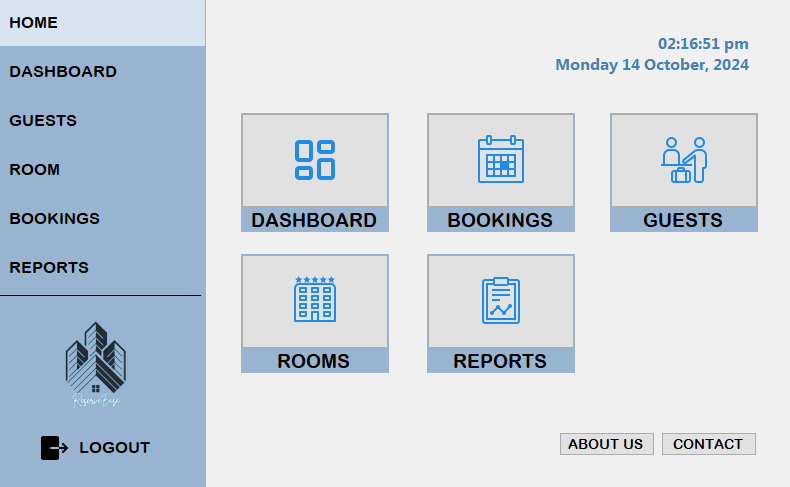
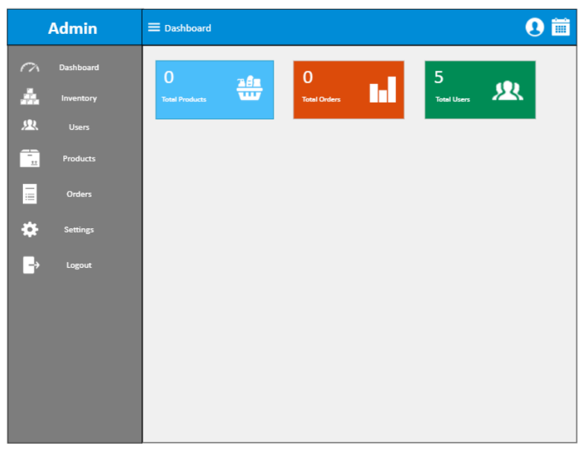
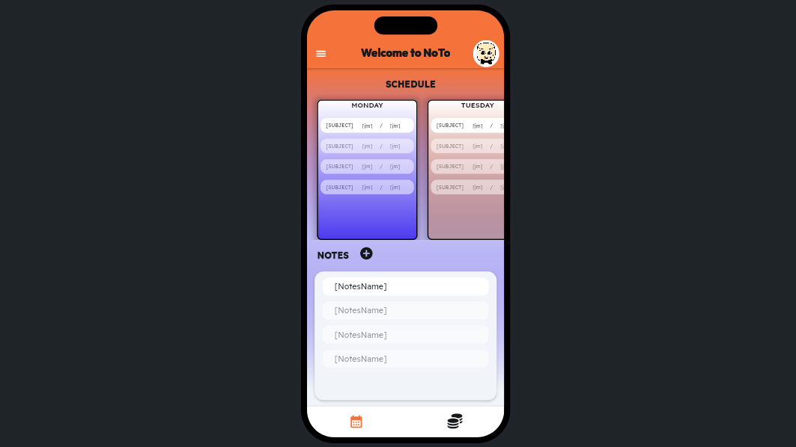

On this project, I contributed to building the usable prototype of the system with the core functions and continued doing the backend
implementations up to the finished project, ensuring the requirement features given to me can be found, and validating both
the admin and staff user accounts and the CRUD operations managing vehicles payment and user management.

For this project, I worked on the frontend side and handled the creation of some pages, ensuring
friendly UI in the log-in page only ensuing the designated users to log in their accounts
and room reservation creation page complying on all the nescessary fields to be find on room reservation creation page.

Helped in creating the wireframe of the system ensured that all the nesecesaary part of UI are
represented well while focusing on the user experience since we will be using winforms on this project
we ensured that the UI will be matched on the winforms available drag and drop UI elements

I created this project, with the goal on fully assisting the students no matter what age on
their time management, financial literacy and study habits the mobile application
provides students with the features where they can input their schedule in the dashboard, take notes on the notepad section on the dashboard
and assess their budget on the allowance manager page and that the app has a pomodoro technique timer where they
also listen to lo-fi music when they are studying or just taking a break.